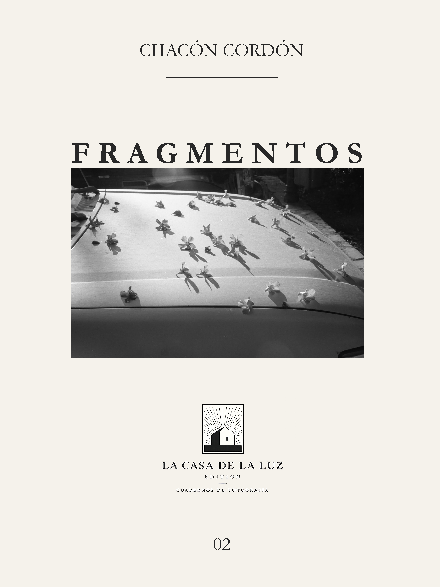

Cuaderno 02
Fragmentos
Una edición creada para el papel, donde la secuencia de las imágenes propone un recorrido propio, independiente de la sala.

Vista previa del cuaderno. Para una experiencia de lectura más cercana a la edición impresa, se recomienda visualizar este cuaderno a pantalla completa en un monitor.